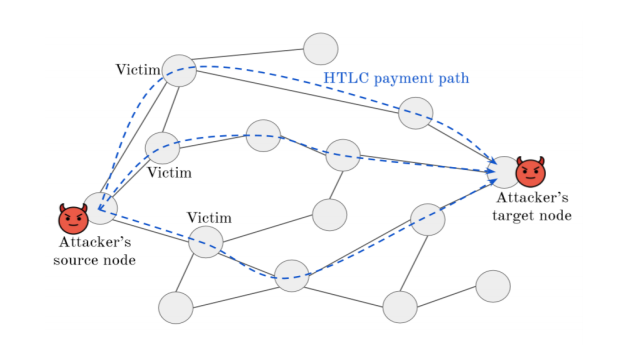
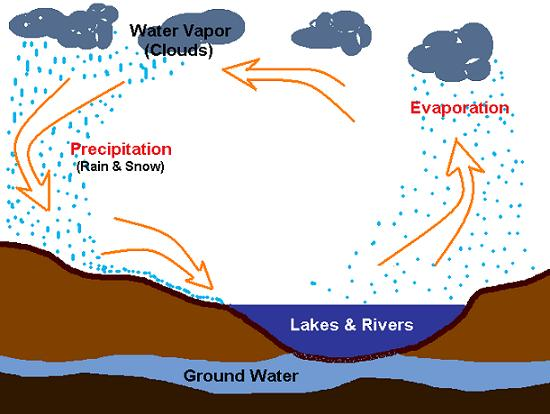

Canhui Chen （陈灿辉）
 |
Master student (starting from August 2021), Email: chench296@mail2.sysu.edu.cn |
About Me
I am now a 4-th year bachelor majored in Software Engineering from School of Data and Computer Science, Sun Yat-Sen (Zhongshan) University, Guangzhou, China (with a rank of 1/174 for the first three years during my undergraduate study).
I am going to begin my post-graduate study in Institute for Interdisciplinary Information Sciences(IIIS), Tsinghua University, majored in Computer Sciences.
Education
B.S. degree, Sun Yat-Sen (Zhongshan) University
majored in Software Engineering from School of Data and Computer Science (ranked 1/174)
Yat-Sen Class in Yat-sen Honor College, an elite liberal undergraduate institution of SYSU
Research Interests
I have a wide range of interests in game theory, mechanism design, multi-agent systems and blockchain systems. And my research style is interdisciplinary in general. Particularly, I am leveraging mechanism design, mathematics optimization, economics analysis, algorithms design, system evaluation and implementation to tackle the multi-agent systems, blockchain systems and game related problems. I will be very happy if you want to discuss these interdisciplinary fields with me. I am always enthusiastic to investigate different research topics. :)
Selected Awards
National Scholarship, 2019 & 2020
Meritorious Winner of Interdisciplinary Contest In Modeling, 2019
First Prize of SYSU Outstanding Student Scholarship, 2019 & 2020
Li Xuerou Foundation Scholarship, 2020 (only 12 recipients in SYSU expect the School of Management, the only one in School of Data and Computer Science, SYSU)
Publications
 |
Canhui Chen, Xu Chen, Jiangshan Yu, Weigang Wu, Di Wu, “Impact of Temporary Fork on the Evolution of Mining Pools in Blockchain Network: A Modeling Analysis,” IEEE Transactions on Network Science and Engineering (TNSE), to appear. |
 |
Canhui Chen, Yihong Ling, Deyang Zhang, Nini Shi, Yunong Zhang, “Noisy Zhang-Dynamics (ZD) Method for Genesio Chaotic (GC) System Synchronization: Elegant Analyses and Unequal-Parameter Extension,” Proceedings of IEEE Symposium Series on Computational Intelligence (SSCI), 2019. |
Working Papers
 |
User Distributions in Shard-based Blockchain Network: Queueing Modeling and Game Analysis |
|  | Game Theoretical Analysis of the Flood & Loot Attack on the Lightning Network |
 |
Scaling of time-varying matrix applied to optimal transport |
Open Projects
If you are interested in the following projects, please contact me. I am always looking forward to potential collaborators to do some interesting work.
|  | Rainfall Algorithm: A novel nature-inspired meta-heuristic optimization algorithm |